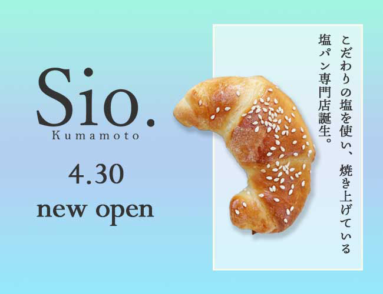

ターゲット設定
30代〜40代女性、近隣の主婦・会社員層を主要ターゲットとして設定。素材の良さや製法へのこだわりに価値を感じる、品質重視の消費者層に訴求する構成としました。

補色理論に基づいた視覚戦略と、ターゲット層の深い分析によって設計された、専門店としての信頼感を演出するバナーデザイン。
30代〜40代女性、近隣の主婦・会社員層を主要ターゲットとして設定。素材の良さや製法へのこだわりに価値を感じる、品質重視の消費者層に訴求する構成としました。
補色を活用した視覚的インパクト
パンの焼き色（オレンジ）の補色に近いブルーを背景に採用することで、メイン商品である塩パンを視覚的に際立たせています。この配色により、一瞬で目を引くバナーを実現しました。
縦書きコピーによる信頼感の演出
縦書きのキャッチコピーを採用することで、「専門店」としての格式と信頼性を表現。和のテイストを感じさせることで、国産素材や職人技といったイメージを暗に訴求しています。